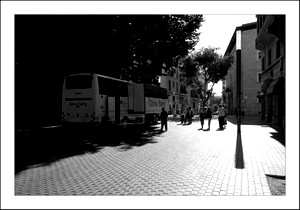

Sa Porta Pintada
Sa Porta Pintada
En esta plaza se encontraba la puerta de Santa Margalida, o Porta Pintada o de la onquista, por la cual según cuentan los huestes de Jaime I entraron a la antigua Medina Mayurqa el 31 de diciembre de 1229. Dicha puerta medieval fue declarada Monumento Nacional en 1908 y destruida clandestinamente en 1912 en nombre del progreso ya que Palma tenía que expandirse más allá de las murallas.